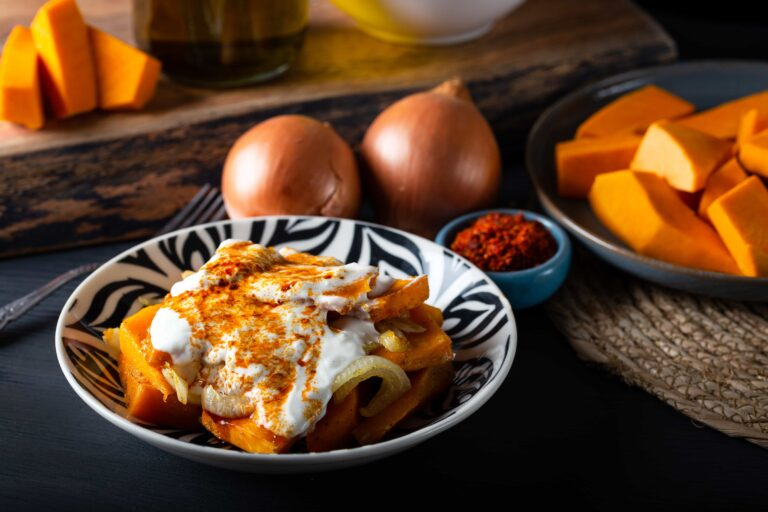
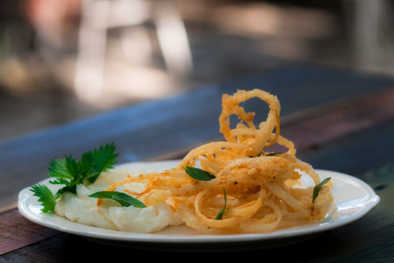
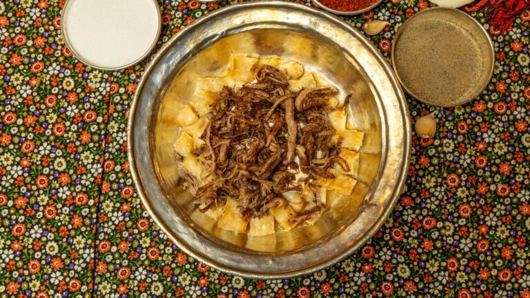
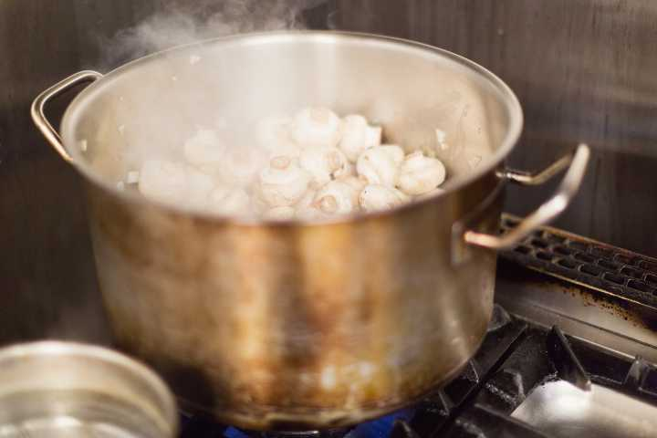
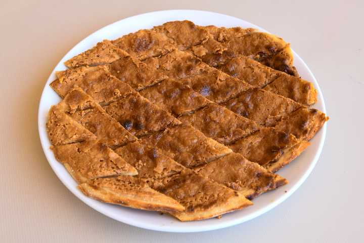
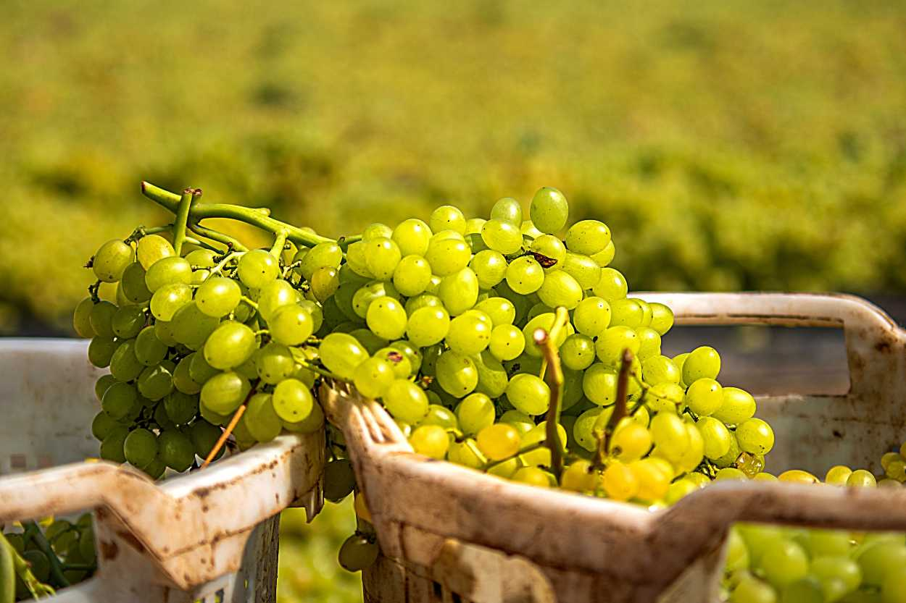

🍽️ Manisa'nın Özgün Lezzetleri: Gelenekten Geleceğe

Manisa Kebabı
Tarihi: Osmanlı saray mutfağının mirasıdır. Saray sofralarından halk mutfağına uzanmış özel bir lezzettir.
Nasıl Yapılır? Marine edilmiş dana eti şişe dizilir, közde pişirilir. Altına tereyağlı pide serilir, yoğurt ve domates sos ile taçlandırılır.
Özelliği: İskender’e benzer ama daha hafif ve yoğun aromalıdır.

Sinkonta
Tarihi: Ege mutfağının klasiklerinden, yaz aylarının favorisi.
Nasıl Yapılır? Patlıcan, kabak, domates ve soğanlar dilimlenir. Zeytinyağı ve kekik ile fırına verilir.
Özelliği: Hem soğuk hem sıcak tüketilebilir. Hafif ve sağlıklı!

Şevketi Bostan
Tarihi: Şifalı Ege otu olarak bilinir. Manisa pazarlarda ilkbaharda bolca bulunur.
Nasıl Yapılır? Otlar temizlenir, kuzu eti ile limonlu şekilde pişirilir.
Özelliği: Sağlıklı ve doyurucudur. Karaciğer dostudur.

Tirit
Tarihi: Osmanlı döneminden kalan halk yemeğidir.
Nasıl Yapılır? Bayat ekmek, et suyu ve yoğurtla ıslatılır. Üzerine kavrulmuş et ve tereyağı dökülür.
Özelliği: Yoksul zamanların zengin lezzetidir.
Yöresel Varyasyonlar: Manisa, Kastamonu, Sivas gibi birçok şehirde farklı şekillerde yapılır.

Mantar Tatlısı
Tarihi: Modern bir yorum, yöresel meyvelerle yapılır.
Nasıl Yapılır? Mantar şeklinde yapılan kurabiye hamuru, meyve aromalarıyla tatlandırılır.
Özelliği: Görsel ve lezzet olarak farklı bir deneyim sunar.

Şekerli Pide
Tarihi: Ramazan aylarında Manisa'da yaygın olarak yapılır.
Nasıl Yapılır? Hamurun üzerine tahin, toz şeker ve biraz susam eklenerek fırınlanır.
Özelliği: Tatlı ve gevrek bir atıştırmalık.

Sultaniye Üzümü
Tarihi: Manisa’nın en meşhur tarım ürünü.
Nasıl Yetişir? Sıcak iklim ve zengin topraklarda yetişir. Hem yaş hem kuru tüketilir.
Özelliği: Tatlı, iri taneli ve aromatiktir.

Mesir Macunu
Tarihi: 500 yıllık geçmişe sahiptir. Yavuz Sultan Selim’in eşi Hafsa Sultan için yapılmıştır.
Nasıl Yapılır? 41 çeşit baharatla hazırlanır. Her baharat farklı bir şifayı temsil eder.
Özelliği: Hem tatlı hem şifalıdır. Her yıl festivali düzenlenir.